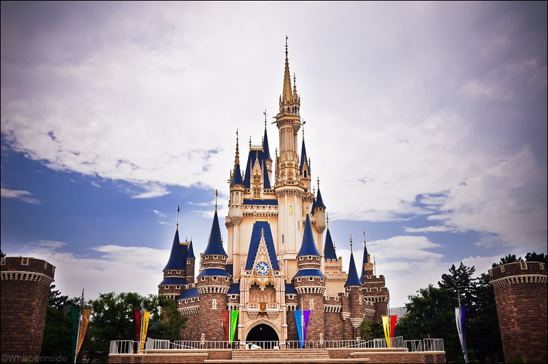

Tokyo
Tokyo is the capital of Japan and over 50% of the torist visit Tokyo, and 10% of the Japan's poppulation lives here
Asakusa
- 🢠Tabearuki – Walkaround and eat Street food
- 🛕 Temples - Explore traditional temples.
- 🵠Cafe - Enjoy a quiet break in a Japanese tea house
- 👘 Kimono - rent a kimono(traditional cloth) for a day

Tokyo Disney resorts
- 🎎 Two Parks - Tokyo Disneyland brings the classic Disney, and DisneySea adds a unique sea theme disney experience
- 🿠Kawaii Snacks - Enjoy Kawaii(cute) and tasty snacks like Little Green Alien mochi, Donald Duck bao buns, and popcorn in cute collectible buckets.
- 💦 Splash Mountain – A rollercoster with a splash!
| Activity / Item | Price (Per Couple) | Where |
|---|---|---|
| 🚆 Train Ride (Tokyo to Disneyland) | ~$8–$10 | JR Keiyo Line or Tokyo Metro |
| 🢠Tokyo Disneyland / DisneySea Tickets | ~$130–$150 | Urayasu, Chiba |
| 🢠Asakusa Street Food | ~$5–$15 | Nakamise Street |
| 🱠Dinner at Japanese Restaurant (Avg) | ~$20–$60 | Izakayas, ramen shops, local joints |
| 🛏️ Hotel Stay (4-star) | ~$100–$200 | Tokyo central (Shibuya, Shinjuku, Ginza) |
| 🥩 Wagyu Beef Dinner (Mid-Fancy) | ~$80–$200 | Ginza, Shinjuku, Akasaka |
| 🎎 Kimono Rental & Photoshoot | ~$60–$100 | Asakusa, Kyoto |